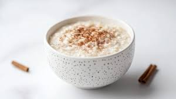

Home
Rice Pudding

Credit:Marco
Verch
Rice pudding is a dish made from rice and milk, and commonly other ingredients such as sweeteners, spices,
flavourings and sometimes eggs. Variants are used for either desserts or dinners. When used as a dessert, it is
commonly combined with a sweetener such as sugar.
Ingredients
- 1 ½ cups cold water
- ¾ cup uncooked white rice
- 2 cups milk, divided
- ⅓ cup white sugar
- ¼ teaspoon salt
- 1 large egg, beaten
- ⅔ cup golden raisins
- 1 tablespoon butter
- ½ teaspoon vanilla extract
Steps:
- Gather all ingredients.
- Pour water into a saucepan and bring to a boil over medium heat; stir in rice. Reduce heat to low,
cover, and simmer until rice is tender and liquid has been absorbed, about 20 minutes.
- Combine cooked rice, 1 ½ cups milk, sugar, and salt in a clean saucepan. Cook over medium heat, stirring
often, until thick and creamy, about 15 minutes.
- Stir in remaining 1/2 cup milk, beaten egg, and raisins; cook 2 minutes more, stirring constantly. Remove
from heat and stir in butter and vanilla until combined..
- Serve warm.